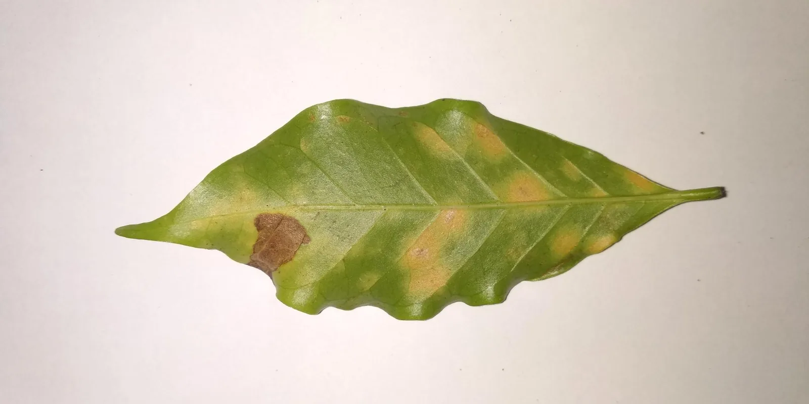
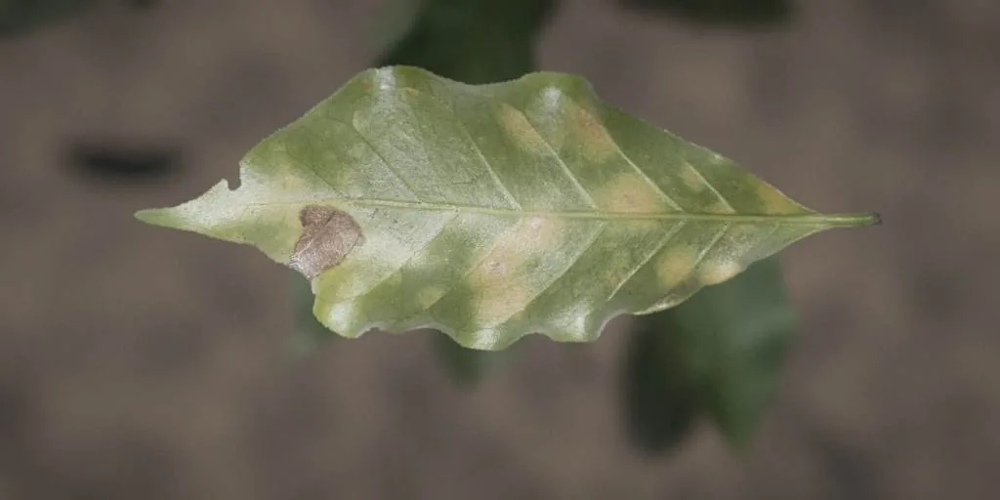
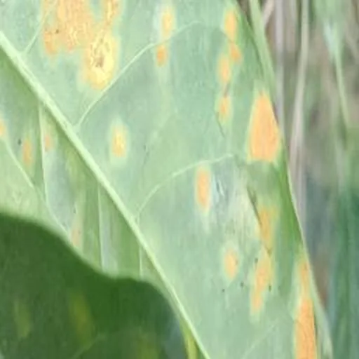
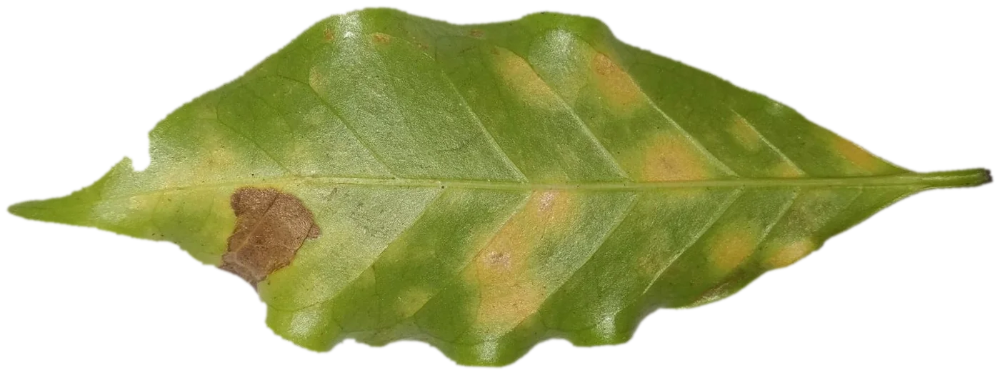

Small AI for coffee farmers
Does this coffee leaf have rust?
ShhS is a small AI that looks at a photo of a coffee leaf and answers: rust, no rust, or not sure. We taught it with real photos and with practice photos made in 3D. Then we tested it on real photos from farms.
- Made for
- A farmer's phone, to work without internet
- Tested on
- 1,792 real photos from Ugandan farms
- The AI
- Gemma 4 E2B, an open model from Google DeepMind
A real result
Rust found
The short version
We asked one question: do practice photos made in 3D help a small AI find rust on real farm photos? This is what we did, what we found, and what comes next.

Real leaf photos
1,225 labelled photos of coffee leaves, on plain paper.

Practice photos in 3D
We bend each real leaf in 3D and place it in light, weather and clutter. It keeps its label.
Teach the small AI
It learns to answer rust, no rust, or not sure. We try four ways of teaching it, then two fixes.

Test on real farm photos
1,792 photos from Ugandan farms that the AI never saw.
What we found
How to read this page
- Orange means rust.
- Green means no rust.
- Blue means made in 3D, or taught with photos made in 3D.
- Grey with stripes means not sure.
Every chart has a plain question above it and a one-line answer. Point at a chart for the exact numbers. Words you may not know are in the list. Anything we have not measured yet is marked "To do".
The problem
Noor farms coffee, and her yields dropped. She can't tell why, and the extension officer is far away. A photo of a leaf could answer one important question: does it have rust?
In this chapter: Meet Noor · What rust looks like · Why training photos matter
Meet Noor
Noor is 38 and farms 2 hectares in the Ondera highlands. Coffee grows on the upper slope. Maize and beans grow below it.
The extension officer reaches her sub-county twice a year at best. At harvest, a buyer names a price she has no way to check.
She has a phone for calls and mobile money. Her daughter's smartphone comes home on weekends. The house has no Wi-Fi, so Noor buys 3G data when she needs it.
She is not alone. More than 25 million farmers depend on coffee, and smallholders grow about 80% of the world's coffee.Source: FAO Director-General, 27 July 2025.
Noor is fictional. Her limits are not. They come from the World Bank brief for this challenge.
- CoffeeUpper slope. The leaves are here.
- Maize and beansBelow the coffee.
- HouseNo Wi-Fi. 3G bundles. The phone stays here.
- Extension officerTwice a year at best.
The leaves are on the slope. The phone is at the house. So the AI has to work on the phone, with no internet.

Point at a ringOrange rings mark rust spots. The dashed ring marks a brown patch from something else.
What coffee leaf rust looks like
Coffee leaf rust is a fungus. It shows as yellow-orange powdery spots on the underside of the leaf. Later the centres turn brown and the leaf falls early. The spores travel on wind and rain.
It is costly. In 2012 and 2013 it cost Central America and nearby countries an estimated 2.7 million bags of coffee, about 500 million US dollars and about 374,000 jobs.Source: International Coffee Organization, report ED 2157/13, using PROMECAFE figures.
A leaf can have more than one problem. This leaf has rust and leaf miner damage. Our question stays narrow: rust, yes or no.
How bad is it? BRACOL grades the share of the leaf with symptoms, from 0 to 4.
Severity 1
Training photos don't look like Noor's farm
Most public photo sets are tidy: one leaf, a plain background, good light. The brief warns that an AI trained only on these does poorly on real field photos.
A well-known test shows the size of the problem. A plant disease AI scored 99.35% on held-out photos from its own set, and about 31% on photos taken in other conditions.Source: Mohanty, Hughes and Salathé, Frontiers in Plant Science, 2016.
Real BRACOL, Brazil, plain paper, 1,747 leaves
Real Uganda, phones on farms, 1,792 photos
Drag the line to compare. Point at a photo to see where it comes from.
A trap we found in BRACOL
In BRACOL, the colour of the photo border alone predicts rust. Three numbers and no leaf give an of 0.74. That is far from a coin flip (0.50).
An AI can learn the paper and skip the leaf. Our practice photos have random backgrounds, and the same check gives 0.50.
The chart shows the border colour of each photo, split by whether the leaf has rust. Two separate curves mean the colour gives it away. Two curves on top of each other mean it does not.
Leaves with rustLeaves without rust
The solution
We make the practice photos we can't take. We start from real leaf photos, bend each leaf in 3D, put it in different light and weather, and photograph it with a virtual phone. Every practice photo keeps the label of its source leaf.
In this chapter: How a practice photo is made · Eight kinds of weather · The practice photos · The small AI
How a practice photo is made
Scroll to follow one real leaf through six steps. In step 3 you can bend the leaf and change its background.
- 1
Start with a real leaf
BRACOL leaf 897, photographed on paper. Its label is rust, severity 4. Only leaves from the training split are ever used. Validation and test leaves stay out.
- 2
Cut it out and find the spots
A script removes the paper, then finds the yellow-orange spots and the brown patches. 1,221 of 1,225 training leaves pass the checks.
- 3
Bend it in 3D and pick a background
Blender wraps the photo on a leaf with a fold, a droop, a twist and wavy edges. Here you can change the bend and the background yourself.
- 4
Put it in the field
Light and weather come from eight presets. Blurred leaves, stems and soil sit behind it, and a virtual camera takes the picture. One image takes a few seconds.
- 5
Make it look like a phone photo
The picture gets the flaws of a real phone: colour shifts, blur, noise, a darker corner and JPEG damage. We keep the settings of every picture.
- 6
Keep the label
The practice photo gets the label of its source leaf. For a rust leaf, a close-up aims at an orange spot, so the label stays true. Set 1 holds 1,353 labelled photos.
Step 1 of 6
Label kept: rustCopied from BRACOL leaf 897
The same leaf in eight kinds of weather
Pick a scene. On the left is what Blender makes. On the right is what a phone would record. The label is always rust.
3,253 practice photos nobody took
We made four sets. Set 1 has 1,353 photos and trained the models in the first results. Set 2 has as many more and is not used yet. Set 3 keeps 806 photos from set 1 and swaps the rest for 547 look-alike photos. Set 4 keeps all of set 1 and adds the look-alikes. The results of sets 3 and 4 are in chapter 3.
Point at a photo for its label and settings.
Photos the AI should refuse
We also made 150 bad photos on purpose: no leaf, a leaf too small to judge, out of focus, glare, and too dark. A safe AI says "not sure" on these. It must not guess.
The small AI
The AI is Gemma 4 E2B, an open model from Google DeepMind with 2.3 billion effective parameters and an Apache 2.0 licence. We teach it with , which trains a small add-on and leaves the base model alone. We show it a photo and ask one question. The answer is one word.
Why a photo AI and not an SMS or a spreadsheet? Rust has to be seen, and an SMS can't look at a leaf. The officer is far away. A photo is the shortest way to ask.
How the AI decides
It gives every photo a score. Below the the answer is no rust. Above it the answer is rust. In a band around the cut-off the answer is "not sure, ask a person".
- Only three answers. The AI can't invent an answer. It says rust, no rust, or not sure.
- A person decides. "Not sure" sends Noor to the extension officer. The tool never acts for her.
- No rust is not healthy. "No rust found" means no rust. The leaf can still have another problem.
NdiyoKutu ya majani ya kahawa
Angalia majani ya karibu.
The phone screen, as a sketch
Design sketch. The photos and answers are real model output on test photos. The app is not built yet.
Will it run on a phone? What we know
Not built yet
We have not exported our trained model or run it on a phone. The Android build of the untrained model is one 2.6 GB file, and the phone software is Google's LiteRT-LM.
Google reports 0.3 seconds to the first word on a Samsung S26 Ultra with a text question. We found no speeds for photos or for cheaper phones.
A catch with "not sure"
The Android code returns the written answer, not the score. Our "not sure" band needs the score. So the phone needs another way: for example, a trained third answer.
If the phone reads only the plain yes or no, the untrained AI is not good enough. See the table.
The results
We taught the AI four ways and tested each version on photos it never saw: 261 clean photos, and 1,792 real photos from Ugandan farms. Here are the answers, one question at a time.
In this chapter: The four versions · The answers · Not sure · Explore every run · Try it
The four versions of the AI
Same AI, four ways of teaching it. We repeat every trained version three times, with different random starts, to see how much the results move.
The answers
Do the practice photos help on real farm photos?
Why not? What goes wrong?
Another disease (phoma). The practice-photo versions say "rust". The real-photo version says "no rust".
Rust, as labelled. The practice-photo versions find it. The real-photo version misses it.
Did our fixes work?
The look-alike photos. We made 547 practice photos of leaves with another disease and an orange rim around the dark lesion. All of them are labelled "no rust". Set 3 swaps them in for part of set 1 and keeps 806 photos of it. Set 4 keeps all of set 1 and adds them.
How many local photos does it take to set the cut-off?
Can it say "not sure"?
Every photo gets a score. The chart shows the scores of real photos. Photos with rust (orange) should land on the right. Photos without rust (green) should land on the left. Near the cut-off the AI is often wrong, so we put a band around it. A photo inside the band gets "not sure".
Drag the band wider. The AI answers fewer photos, and the ones it answers are right more often.
Photos with rustPhotos without rustPhoma photosNot sure band
Explore every run
For readers who want the detail. Pick a test set. Three charts follow. Dots are single training runs, so you can see how much results move.
Open the explorer
Pick one leaf with rust and one without. The score is how often the AI ranks the rust leaf higher. 1.0 is perfect, 0.5 is a coin flip.
Share of the 1,225 real training photos used. Ranking score on the test set.
What we can say, and what we can't
What the numbers show
What they do not show yet
Try it: pick a photo and see what each version said
These are real scores on test photos the AI never saw. Some are wrong. We left them in.
What is next
Our data has gaps, and we say where. The most useful next step is to make the practice photos look like one real place, and to check them against about 100 photos from there.
In this chapter: What our data does not cover · Making it local · Our take
What our data does not cover
The brief scores this part. Here is each kind of photo, and which of our sets really has it.
Making it local
Our first practice photos are general. They use leaves from Brazil and scenes that look like no place in particular. The next step is narrower: keep the same pipeline and change the scene to match one place.
Scene pack
Then we check the new photos on about 100 real photos from the same place, and set the cut-off there. The local-photos chart in chapter 3 shows why about 100 is a good start.
Our take
Localizing AI means the training world looks like the farm.
A leaf AI is only as local as its photos. Ours learned from Brazilian leaves on paper, and from 3D practice photos of them. It scores well on clean photos. On Uganda phone photos the practice photos did not beat real photos alone, and the closest version (set 4) needed look-alike photos that we added after we studied its mistakes. It has never seen Noor's farm.
So we localize the data first. We change the light, the soil, the crops next to the coffee and the phone camera in the practice photos, then test on real photos from the place. We also localize trust. The tool says "not sure" when it should, and Noor and her officer decide.